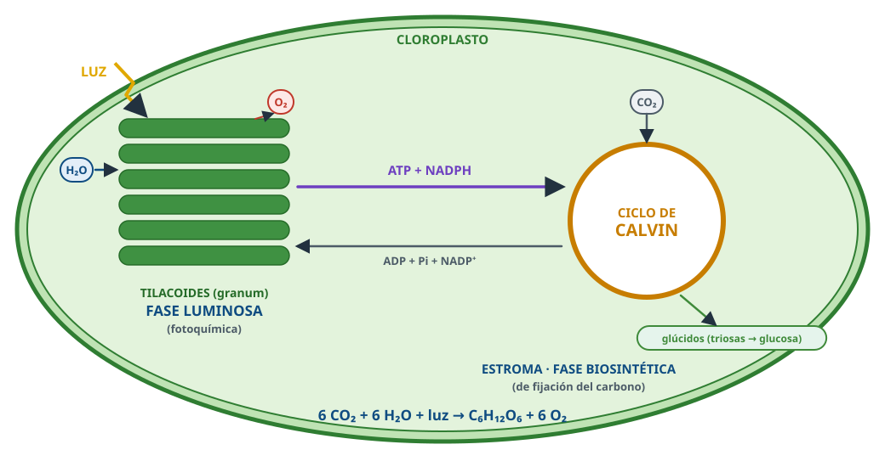

Fotosíntesis y quimiosíntesis
Todo lo esencial para repasar. Resaltado = palabra clave de los criterios de corrección.
1 · Concepto
- Proceso anabólico: materia orgánica a partir de inorgánica (CO₂, H₂O) con energía luminosa.
- 6 CO₂ + 6 H₂O + luz → C₆H₁₂O₆ + 6 O₂. En los cloroplastos.
- Oxigénica (plantas, algas, cianobacterias; dador H₂O, libera O₂) · anoxigénica (bacterias purpúreas y verdes; dador H₂S, sin O₂).

2 · Fotosistemas
- En la membrana de los tilacoides.
- Antena (clorofilas, carotenoides) capta luz → centro de reacción cede e⁻ de alta energía.
- PS II (P680), PS I (P700).
3 · Fase luminosa (tilacoides)
- Captación de luz → fotólisis del agua (O₂, H⁺) → transporte electrónico PS II → PS I → NADP⁺ (último aceptor) → NADPH.
- Fotofosforilación: H⁺ al lumen → vuelven por la ATP sintasa → ATP.
- Acíclica: ATP, NADPH, O₂. Cíclica (solo PS I): solo ATP.
4 · Ciclo de Calvin (estroma)
- Fijación (RuBisCO + ribulosa-1,5-bisfosfato) → reducción (ATP, NADPH) → regeneración.
- Entra CO₂, ATP, NADPH; sale glúcidos.
- 1 glucosa: 6 CO₂, 18 ATP, 12 NADPH.
- Anabólico (Krebs es catabólico).
5 · Factores
- Luz y CO₂: aumentan hasta un máximo.
- Temperatura: óptima; alta → enzimas desnaturalizadas.
- Sequía → estomas cerrados → sin CO₂.
6 · Quimiosíntesis
- Sin luz: oxidar compuestos inorgánicos (NH₃, NO₂⁻, H₂S, Fe²⁺) → ATP y poder reductor → ciclo de Calvin.
- Bacterias nitrificantes, del azufre, del hierro: ciclos biogeoquímicos, fuentes hidrotermales.
7 · Importancia
- Productores primarios: materia orgánica para los heterótrofos; energía luminosa → química.
- Oxígeno: atmósfera aerobia, capa de ozono. Retira CO₂; combustibles fósiles.
⚠️ Errores que restan
- «El O₂ sale del CO₂»: sale del agua.
- «El ciclo de Calvin ocurre de noche»: no.
- «El O₂ es el último aceptor de la fotosíntesis»: es el NADP⁺.